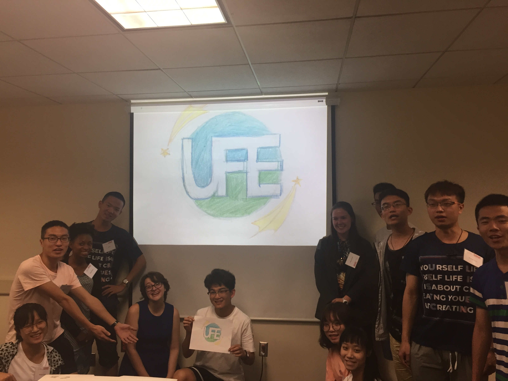

The United Federation of Earth (UFE)
- The UF has first-mover advantage in its space technology; it will reach Mars in one year, much more quickly than the Union of Democratic Nations or the Commonwealth Republic.
- It is an advanced nation with a moderately well educated population with reducing birth rates.
- It has a sizeable population of 40 million. While it retains access to abundant natural resources, it seeks greater reserves.
- It is overall competitive in most industries, including mining, communications, and space. Accordingly, it seeks to privatize land or obtain long term leases on Mars.
- However, the UF has seen investment in space technology dwindle in its private sector, leading national leaders to worry about its first-mover advantage being negated.
- The UF seeks to send out its military for both scouting and ‘peace-keeping’ purposes.
- Main Goals Include:
- Property rights, access to mining zones, and use of water for mining
- Military presence for protection of property (as the country of first arrival)
- Limited colonization.
_______________________________________________
The United Federation of Earth
Ministries: